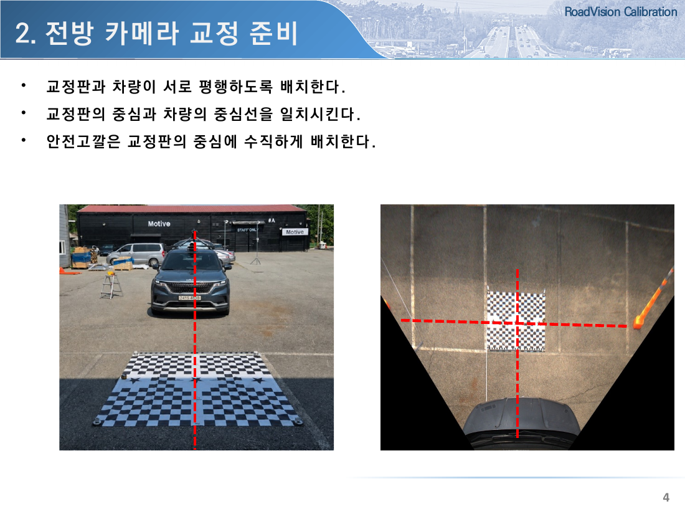
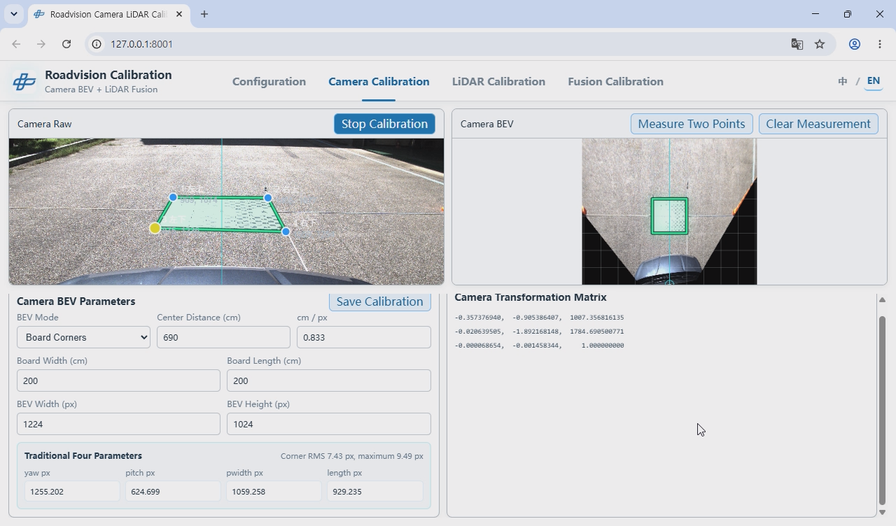

1. 核心摘要
现有输入为四个参数
使用 yaw、pitch、width、length。
现有矩阵计算六个值
水平梯形约束使 h21、h31 为 0。
当前自动矩阵计算八个值
用户选择的四点被直接作为任意四边形。
必须保持现有矩阵结构
上、下边必须与图像 x 轴平行。
UI 必须保持梯形约束
移动控制点时仍须保持水平约束。
2. 标定基准

正常 BEV 的基准轴
车辆行驶方向轴
=
标定板纵向轴
=
BEV 图像纵轴当现场布置满足标定基准时，变换后的车辆不应左右旋转，而应与图像纵轴对齐。
- 标定板：2 m × 2 m
- 摄像头至标定板：5 m
- 变换后标定板：240 px × 240 px
- 位置：ROI 下方中央
3. 现有透视变换方式
四个输入
yawpitchwidthlength
→
水平梯形
上边两个 y 值相同
下边两个 y 值相同
→
矩形 BEV
兼容现有反算和参数模型
现有矩阵结构
H = [ h11 h12 h13 ] [ 0 h22 h23 ] [ 0 h32 1 ]
四参数方式的优点
- 防止输出图像出现不必要的旋转。
- 四个参数的意义直观。
- 兼容现有存储、反算与运营流程。
- 便于现场人员检查和微调。
4. 当前自动变换方式的差异

当前自动矩阵
H = [-0.357376940 -0.905386407 1007.356816135] [-0.020639505 -1.892168148 1784.690500771] [-0.000068654 -0.001458344 1.000000000]
原因
当前程序将用户选择的四点作为不受约束的四边形。上、下边 y 值可以不同，因此会生成完整的八自由度单应矩阵。
h21、h31 非零，点选误差和四边形倾斜可能导致整个结果发生旋转。
判断：车辆与标定板已按基准平行布置，但 BEV 中车辆中心线仍未与纵轴重合，因此当前结果不符合所需的既有变换行为。
5. 所需的自动变换
即使用户选择四个点，实际变换区域也必须保持为水平梯形。
上方两点必须具有相同 y 值，下方两点也必须具有相同 y 值，并使用修正后的点重新计算矩阵。
目标矩阵
[ h11 h12 h13 ] [ 0 h22 h23 ] [ 0 h32 1 ]
验证条件
abs(h21) < epsilon abs(h31) < epsilon
应使用数值容差。不要先计算一般矩阵后强制将两个值改成 0；应先修正输入梯形，再重新计算矩阵。
6. 保持梯形的 UI 方案
| 方案 | 动作 | 优点 | 注意事项 |
|---|---|---|---|
| A. 控制点联动 | 一个上方点纵向移动时，另一上方点的 y 值同步变化；下方点同理。 | 可保留当前四点 UI。 | 需让用户清楚识别联动行为。 |
| B. 选择后自动修正 | 用户自由选择四点后，分别平均上方和下方点的 y 值，生成水平梯形。 | 可吸收初始点选误差。 | 应区分显示原始点与修正点。 |
建议：首次选择使用 B，后续编辑使用 A。实际用于变换的梯形用粗线显示，原始点作为辅助参考。
7. 修改要求
上方两点的 y 坐标必须相同，下方两点的 y 坐标也必须相同。
每次移动点后都必须保持水平梯形约束。
矩阵必须满足
h21≈0、h31≈0。现有反算必须能够生成
yaw、pitch、width、length。车辆中心线、标定板纵轴和 BEV 纵轴必须重合。
标定板应在 ROI 下方中央显示为 240 px × 240 px 正方形。
8. 我方意见与建议
我们认同一般 3×3 单应矩阵具有八个自由度，且无法准确转换成现有四参数。但我们认为没有必要因此取消四参数并要求现有软件直接输入 3×3 矩阵。
应保留四参数的原因
- 参数含义直观，便于现场人员理解。
- 可判断异常值并进行微调。
- 兼容现有设备、配置、反算及运营流程。
- 反映车辆与标定板平行的物理条件。
- 限制不必要的旋转自由度。
直接输入矩阵的风险
- 现场人员难以判断各值的意义和正常范围。
- 点选误差会影响整个变换结果。
- 车辆明显旋转时矩阵仍可能在数学上有效。
- 需要修改现有软件和数据结构。
- 难以直观比较和管理不同车辆的标定值。
我方建议
当前差异并非四参数模型本身的问题，而是自动标定生成了现有模型不需要的八自由度矩阵。
不应让现有系统适配八自由度矩阵，而应让自动标定结果适配现有四参数模型。
不要让现有系统适配 8-DOF 矩阵。 应让自动标定结果适配现有四参数模型。
最终要求：不要先计算八自由度矩阵再近似转换四参数，也不要要求人工重新调整。应从首次四点选择开始应用现有模型约束，直接生成兼容结果。